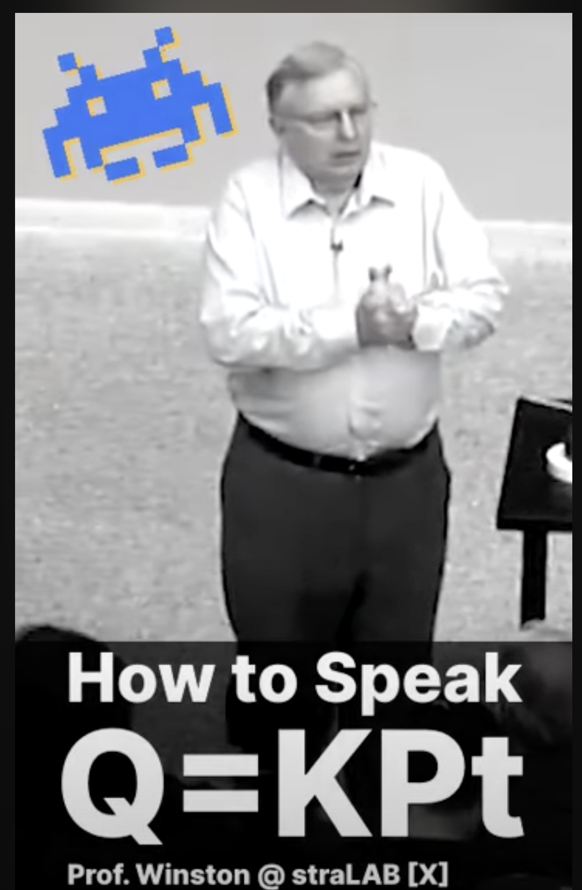

Programming Languages
From the first day of the semester forward I expect students (you) to visit this page once per 24 hours. It is the only source of truth with respect to milestones and warm-up exercises.

Wednesday, September 24th, 2025 7:10:55am
You may wish to run your xcsk script (3 —

Monday, September 22nd, 2025 7:44:53pm
Thanks Anfisa B. for pointing out some problems with the suggested readings for
milestones 2 —

Tuesday, September 16th, 2025 9:38:54pm
You may wish to run your xparse script (2 —

Thursday, September 11th, 2025 4:58:35pm
I am looking for two volunteer pairs to present their respective solutions to
1 —
On the downside, you get to experience the stress of exposing your work to many people. On the upside, you get feedback on your performance without the stress of a recorded grade.
If you’re interested, send email to your section TA. First come, first serve.

Thursday, September 11th, 2025 8:55:07am
Assignment Statements
Expressions
Control
Store
execute x = n
before:
((x = n)::stmt* e)
s
after:
(stmt* e)
s[x = n]
execute x = y (success)
before:
((x = y)::stmt* e)
s
subject to:
y is defined in s
after:
(stmt* e)
s[x = n]
where
n
=
s[y]
execute x = y (failure)
before:
((x = y)::stmt* e)
s
subject to:
y is not defined
after:
error
s
execute x = y + z (success)
before:
((x = (y + z))::stmt* e)
s
subject to:
y and z are defined in s
after:
(stmt* e)
s[x = k]
where
n
=
s[y]
and
m
=
s[z]
and
k
=
+
execute x = y + z (failure)
before:
((x = (y + z))::stmt* e)
s
subject to:
y or z is not defined in s
after:
error
s
Control
Store
evaluate y as return expression
before:
([ ] y)
s
subject to:
y is defined in s
after:
([ ] n)
s
where
n
=
s[y]
evaluate y as return expression
before:
([ ] y)
s
subject to:
y is not defined
after:
error
s
evaluate y + z as return expression
before:
([ ] (y + z))
s
subject to:
y and z are defined in s
after:
([ ] k)
s
where
n
=
s[y]
and
m
=
s[z]
and
k
=
+
evaluate y + z as return expression
before:
([ ] (y + z))
s
subject to:
y or z is not defined in s
after:
error
s

Wednesday, September 10th, 2025 5:47:32pm
Here is the OO interpreter:
#lang racket #; (define-type PROG+ (U ERR [Instance PROG])) #; (define-type STMT+ (U ERR [Instance STMT])) #; (define-type EXP+ (U ERR [Instance EXP])) #; (define-type Sym+ (U ERR Symbol)) (define prog% (class* prog%- (equal<%>) (inherit-field statements end) #; {-> (U Real Err)} (define/public (interpret) (define table (make-hash)) (with-handlers ([(λ (xn) (is-a? xn err%)) identity]) (for ([s statements]) (send s interpret table)) (send end interpret table))) (super-new))) (define ass% (class* ass%- (equal<%>) (inherit-field lhs rhs) #; {Store -> (U Real Err)} (define/public (interpret table) (define rhs+ (send rhs interpret table)) (hash-set! table lhs rhs+)) (super-new))) (define num% (class* num%- (equal<%>) (inherit-field n) #; {Store -> Real} (define/public (interpret table) n) (super-new))) (define ref% (class* ref%- (equal<%>) (inherit-field x) #; {Store -> (U Real Err)} (define/public (interpret table) (hash-ref table x (signal-error x))) (super-new))) (define add% (class* add%- (equal<%>) (inherit-field lhs rhs) #; {Store -> (U Real Err)} (define/public (interpret table) (+ (hash-ref table lhs) (hash-ref table rhs))) (super-new))) #; Name -> (Any -> Err) (define ((signal-error x) _) (raise (new err% [msg "undefined variable"] [loc x])))

Wednesday, September 10th, 2025 12:40:40pm
You may wish to run your xcount script (1 —

Monday, September 8th, 2025 4:52:01pm
Two items.
1. Luc F. will hold an extra office hour tomorrow, Tuesday September 10, at 3:30pm.
2. I had a request for a topic-outline in the second section. See Topics on the left for a page that spells out a rough outline for the course.
Do keep in mind that this is the first time this course will ever have been taught in this manner, so this listing is preliminary and comes with a small amount of slack time.

Saturday, September 6th, 2025 4:02:46pm
To assist you with the first homework, I have deployed a script called
check-program-1 at /course/cs4400f25/bin/. The script checks
whether you followed the instructions for delivering an executable specified in
1 —
[login-students ~]$ /course/cs4400f25/bin/check-program-1 test-one |
Cloning into 'test-two'... |
remote: Enumerating objects: 25, done. |
remote: Counting objects: 100% (25/25), done. |
remote: Compressing objects: 100% (16/16), done. |
remote: Total 25 (delta 8), reused 21 (delta 4), pack-reused 0 (from 0) |
Receiving objects: 100% (25/25), done. |
Resolving deltas: 100% (8/8), done. |
cloned, specified directories exist, xcount is exectuable, launching |
pushing EXAMPLE into xcount |
|
waiting for result from xcount |
1 |
xcount successfully launched, consumed a EXAMPLE, and returned something. |
This test script did _not_ check the output. |
By contrast, the next repo, named test-two is badly organized. The script points out what is missing:
[login-students ~]$ /course/cs4400f25/bin/check-program-1 test-two |
Cloning into 'test-two'... |
remote: Enumerating objects: 11, done. |
remote: Counting objects: 100% (11/11), done. |
remote: Compressing objects: 100% (6/6), done. |
remote: Total 11 (delta 0), reused 11 (delta 0), pack-reused 0 (from 0) |
Receiving objects: 100% (11/11), done. |
check-program: repo-level directory 1 does not exist |
Finally, I failed to supply a properly executable program in the repo named test-three, and the script reports the problem:
[login-students ~]$ /course/cs4400f25/bin/check-program-1 test-three |
Cloning into 'test-three'... |
remote: Enumerating objects: 10, done. |
remote: Counting objects: 100% (10/10), done. |
remote: Compressing objects: 100% (5/5), done. |
remote: Total 10 (delta 0), reused 10 (delta 0), pack-reused 0 (from 0) |
Receiving objects: 100% (10/10), done. |
cloned, specified directories exist, xcount is exectuable, launching |
pushing EXAMPLE into xcount |
|
waiting for result from xcount |
************************** |
the executable errored out |
xcount:13:9: cannot open module file |
module path: #<path:/home/matthias/check-program-tmp/test-three/get.rkt> |
path: /home/matthias/check-program-tmp/test-three/get.rkt |
system error: no such file or directory; rkt_err=3 |
location...: |
xcount:13:9 |
************************** |
check-program: something went wrong with running xcount and feeding an EXAMPLE |
The script will discover the presence of a Makefile and use it to build an executable.

Thursday, September 4th, 2025 12:02:36pm
| #lang racket |
| (struct Mumble (Xs n) #:prefab) |
| (struct anX (n) #:prefab) |
| (struct err [source msg] #:prefab) |
| #; {type AST = (U Err [Mumble [Listof X] (U Err Number)])} |
| #; {type X = (U Err (anX Number))} |
| #; {type Err = (err AST String)} |
| #; {IExample -> AST} |
| (define (parse-mumble e) |
| (match e |
| [(cons x more-es) |
| (define-values (xs remainder) (parse-x e)) |
| (define nn (parse-number remainder)) |
| (Mumble xs nn)] |
| [_ (err e "a Mumble expected")])) |
| #; {IExample -> (Values [Listof X] IExample)} |
| ; parse potential Xs and return them, plus the remainder of ‘e0‘ |
| (define (parse-x e0) |
| #; {IExample [Listof X] -> (Values [Listof X] IExample)} |
| ; ACCU INV ‘accu‘ represents parsed Xs between ‘e0‘ and ‘e‘ |
| (define (parse-x/accu e accu) |
| (match e |
| [(? empty?) |
| (values (reverse accu) '())] |
| [(cons (list 'X (? number? n)) remainder) |
| (parse-x/accu remainder (cons (anX n) accu))] |
| [(cons (? number?) remainder) |
| (values (reverse accu) e)] |
| [_ |
| (values (reverse (cons (err e "an X or a Number expected") accu)) e)])) |
| ; START HERE: |
| (parse-x/accu e0 '())) |
| #; {IExample -> (U Err Number)} |
| ; parse a Number inside of a list |
| (define (parse-number e) |
| (match e |
| [(list (? number? n)) n] |
| [_ (err e "number expected")])) |
| (module+ test |
| (require rackunit) |
| (define ex0 (list)) |
| (check-equal? (parse-mumble ex0) (err ex0 "a Mumble expected")) |
| (define ex1 (list (list 'X 1.0) (list 'X 2.0) 3.0)) |
| (check-equal? (parse-mumble ex1) (Mumble (list (anX 1.0) (anX 2.0)) 3.0)) |
| (define ex2 (list 4.0)) |
| (check-equal? (parse-mumble ex2) (Mumble (list) 4.0)) |
| (define ex3 (list (list 'X 1.0))) |
| (check-equal? (parse-mumble ex3) (Mumble (list (anX 1.0)) (err '() "number expected"))) |
| (define ex4 (list (list 'aName) 4.0)) |
| (parse-mumble ex4)) |

Wednesday, September 3rd, 2025 3:06:33pm
I am posting the following complete solution to 1 —
| #lang racket |
| (provide |
| #; { –> Void } |
| ; read an Example, as specified in Assignments/Actual/1.html, |
| ; count the Names, and print the result as a string |
| main) |
| (require "../get.rkt") |
| (module+ test |
| (require "../tests.rkt") |
| (require rackunit)) |
| (define (main) |
| ; GUARANTEE delivers an Example: |
| (define in (read-s-expression)) |
| (define nn (count in)) |
| (define out (~s nn)) |
| (printf "~s\n" out)) |
| (module+ test |
| #; {tester : (-> Void) String String String -> Void} |
| #; (tester main in out label-of-test) |
| ; is a test case that feeds ‘in‘ into ‘main‘ |
| ; and compares its output to ‘out‘ |
| (tester main "1.0" "0" "basic test 0") |
| (tester main "a" "1" "basic test 1") |
| (tester main "(a b c)" "3" "basic test 2") |
| (tester main "(a 1.0 c)" "2" "skip one")) |
| #; {Example -> Natural} |
| (define (count in) |
| (match in |
| [(? symbol?) 1] |
| [(? number?) 0] |
| [(list example* ...) (apply + (map count example*))])) |
| (module+ test |
| (check-equal? (count 'a) 1) |
| (check-equal? (count '(a b c)) 3) |
| (check-equal? (count '(a (((((((((((1.1))))))))))) c)) 2)) |

Tuesday, August 19th, 2025 10:51:15pm
Welcome to Programming Language Pragmatics Fall 2025.

Court Martial
Do watch the first 30s, and you know how what I mean.